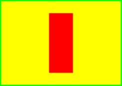
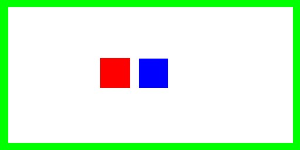

wren % atlc very-odd.bmpatlc would produce the following output.
very-odd.bmp 2 Er= 1.00 Zo= 56.557 Ohms C= 59.0 pF/m L= 188.7 nH/m v= 2.998e+08 m/s v_f= 1.000 VERSION= 4.6.0All information is printed on one long line so its easy to process with other software. Note the impedance Zo is 56.557 Ohms.
The size (number of pixels) in the bitmap should be sufficient that the structure can be drawn accurately, but not so large that it takes too long to process. About 1 MB is reasonable.
atlc can be used too. We are not suggesting that atlc is used instead of the normal formula for coax on a regular basis, but since it's a simple example, it is useful for demonstration. Also, as there is an analytical expression for Zo, we can get some idea of the accuracy of atlc
Since the cross section consists of a circular conductor inside another circular conductor, the programme
create_bmp_for_circ_in_circ can be used to generate the bitmap, rather than the more time consuming procedure of using a graphics package and drawing it manually.. We will assume that the inner diameter of the outer conductor is 12 mm, the outer diameter of the inner conductor is 3.9 mm, and the dielectric has a permittivity of 1.0. Since the conductors are coaxial, there is zero offset between their centres. The programme
create_bmp_for_circ_in_circ will be used to generate the bitmap, with these physical dimensions If we run
create_bmp_for_circ_in_circ without any arguments, it will print a usage message, showing the first argument should the the outer diamater (D=12 mm), the second the inner conductor (d=3.9 mm), the third the offset 'O' between the conductors (O is zero since they are coaxial and there is therefore no offset between centres). The fourth argument is the relative permittivity (1.0 in this case).
Ignoring the options, which are not necessary unless we wish to change the behaviour of create_bmp_for_circ_in_circ, we would type
% create_bmp_for_circ_in_circ 12 3.9 0 1.0 coaxial_1.bmp
This will produce a bitmap like the image on the left. The inner conductor is red, the outer green and the dielectric is white in this case, as Er=1.0. Don't worry about the fact that the outer conductor is square, as the inside of it is round, which is all that matters.
To calculate the properties of this coaxial cable, we then run
atlc, where it will print the important properties to the screen, again on one long line (you will have to scroll the brower to see it all).
% atlc coaxial_1.bmp coaxial_1.bmp 2 Er= 1.00 Zo= 67.390 Ohms C= 49.5 pF/m L= 224.8 nH/m v= 2.998e+08 m/s v_f= 1.000 VERSION= 4.6.0
The correct answer, given by the formula Zo=59.95849160*loge(D/d)/sqrt(Er) is 67.3892 Ohms, so atlc's estimate of Zo= 67.390 Ohms is in error by only 0.001%!! We could probably increase the accuracy further, by generating a larger bitmap with
create_bmp_for_circ_in_circ, by adding the -b command line option, but there is no point. Who can argue with an error of just 0.001% ???
We could if we wanted use an outer conductor which is round on both the inner and outer like this:

so it looks more like normal coax. However, there are three good reasons not to do this. This applies to any structure you draw.
- It is more difficult to draw in a graphics package
- atlc will run slower. This is because it needs to compute the voltage at each pixel outside the outer conductor, rather than just know all pixels are at zero. In fact the computation time rises from 1 minute and 34 s to 1 minute and 51s - an increase of 18%.
- If the voltage on the outer conductor was non-zero (say +1 V for example), atlc would be less accurate too. This is because atlc would have to calculate the voltage everywhere outside the outer conductor, which should in theory be 1 V everwhere, but atlc would need to compute this. This is not an issue when the outer conductor is 0 V (green) since the voltages on all dielectrics are initalised to 0 V. But if the outer conductor was +1 V for example, these voltages would need to be computed and whilst they would all end up close to +1 V, they would not be exactly +1 V.
Hence there are a number of good reasons to replace any dielectric with a conductor, when it is obvious it does not change the impedance.

The outer conductor needs only to be 2 pixels thick. Drawing a few more is usually benificial, as otherwise they can be hard to see. Do not make it too thick (say more than 30 pixels) as it will start to slow atlc.
Once the bitmap is drawn, a copy of which is in atlc-x.y.z/examples/rect9.bmp, atlc is used to process the bitmap.
% atlc rect9.bmpAlthough drawning that would not be hard in the Gimp, Photoshop or whatever, it is even easier to use
create_bmp_for_rect_cen_in_rect to generate the bitmap, giving it the 4 dimensions in the order W H w h and the permittivity, which in the following example is 2.5.
% create_bmp_for_rect_cen_in_rect 10 7 2 5 2.5 rect10.bmp % atlc rect10.bmp rect10.bmp 2 Er= 2.50 Zo= 23.95 Ohms C= 220.2 pF/m L= 126.3 nH/m v= 1.896e+08 m/s v_f= 0.632 VERSION= 4.2.5In order to understand how to use
create_bmp_for_rect_cen_in_rect (or any other programme for that matter), we should run it with no arguments, to get a list of the paramters it needs and any options it may have. 
This time, since this is a coupler, the second inner conductor must be drawn pure blue. Coupled lines are quite a complex suhject, but the important properties to know are the odd and even mode impedance, Zodd and Zeven. Again atlc is used to determine these.
% atlc cop1.bmpatlc responds, but this time giving both the odd mode impedance, the even mode impedance and the characteristic impedance Zo.
cop1.bmp 3 Er_odd= 1.00 Er_even= 1.00 Zodd= 31.69 Zeven= 138.99 Zo= 66.37 Zdiff= 63.38 Zcomm= 69.50 Ohms VERSION=4.2.5
The characteristic impedance Zo is the square root of the odd and even mode impedances. Zo=sqrt(Zodd*Zeven)=sqrt(31.59*138.99)=66.37.
The common mode impedance Zcomm is Zeven/2 and the differential mode impedance Zdiff is 2*Zodd.
Please see the tutorial on couplers for further examples on the use of couplers.
{kind=link}